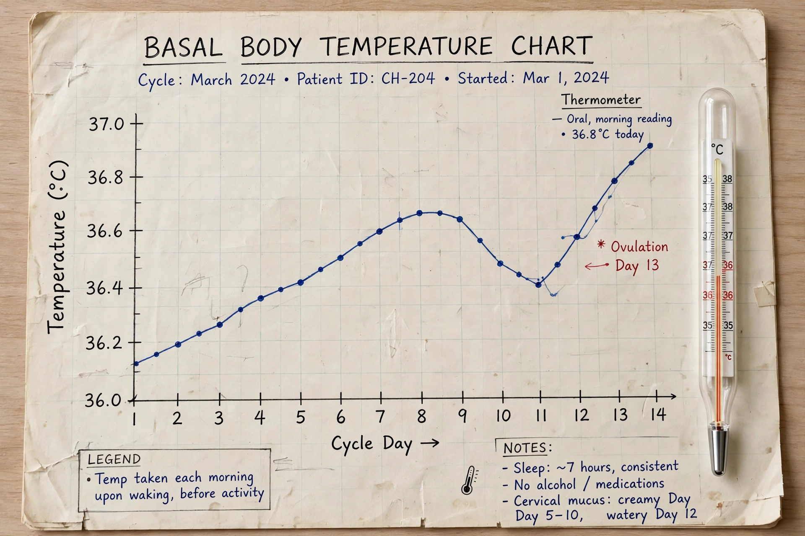

From Wikipedia, the free encyclopedia
| Background | Fertility awareness–based methods |
|---|---|
| First use | 1930s (calendar rhythm); 1950s–1970s (modern methods) |
| Methods | Billings ovulation method, Creighton Model, symptothermal method, Standard Days Method |
| Reversibility | Immediate |

Natural family planning (NFP) comprises the family planning methods approved by the Catholic Church and some other groups for both achieving and postponing or avoiding pregnancy. In accordance with the Church's teachings regarding sexual behavior, NFP excludes the use of other methods of birth control, which it refers to as "artificial contraception."
Periodic abstinence is the form of regulation of birth that is in conformity with the Church's teachings: the couple abstains from intercourse during fertile periods. NFP methods track the signs of a woman's fertility — including cervical mucus, basal body temperature, and calendar calculations — to identify the fertile window in each menstrual cycle.
The principal methods include the Billings ovulation method (developed by John and Evelyn Billings in Australia in the 1960s), which monitors cervical mucus; the Creighton Model, a standardized modification of Billings; the symptothermal method, which combines temperature and mucus observations; and the Standard Days Method, which identifies days 8–19 of the cycle as fertile for women with regular cycles.
Effectiveness varies with method and consistency of use. Modern symptothermal methods have reported perfect-use failure rates below 1% in some European studies, while typical-use rates for fertility awareness methods overall are considerably higher; the US CDC cites a typical-use failure rate of about 23% for fertility awareness–based methods as a class.
The 1968 encyclical Humanae vitae by Pope Paul VI reaffirmed the Church's approval of periodic abstinence while prohibiting artificial contraception, a position developed further in the "theology of the body" catechesis of Pope John Paul II.